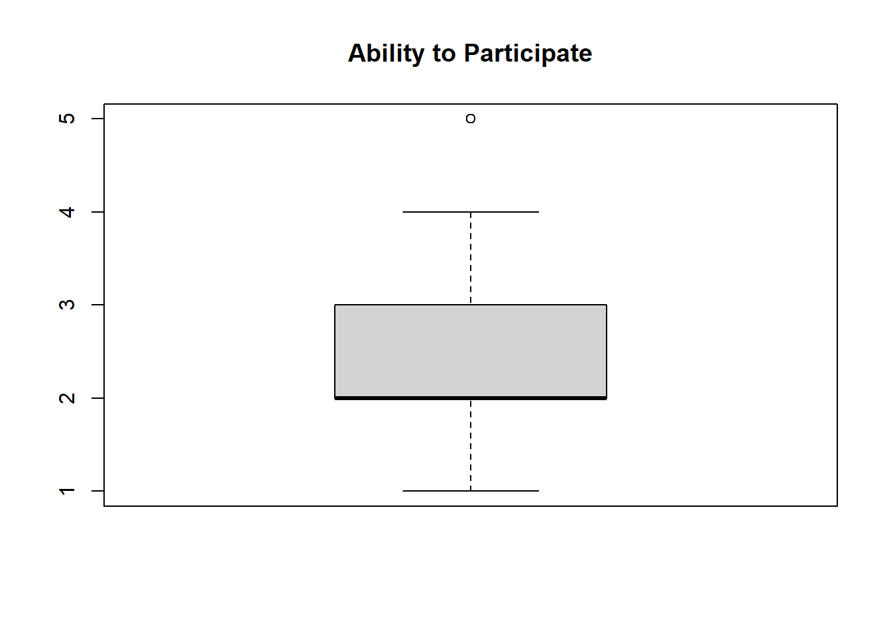
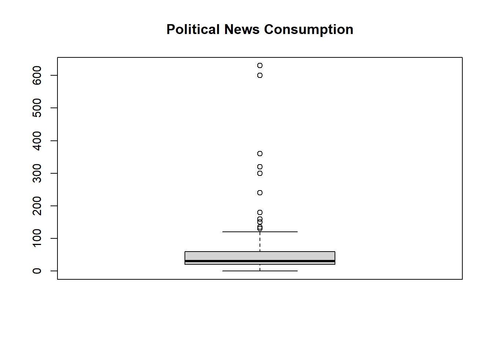

## check working directory
getwd()[1] "C:/Users/antje/Documents/studium PUK/Master-Publizistik/STUDIENASSISTENZ/Test Tutorial"This tutorial gives an introduction into bivariate linear regression analysis. You will learn how to:
As always, we first check with “getwd()” under which path our working directory is. All scripts and data sets we want to work with should be placed in this folder.
## check working directory
getwd()[1] "C:/Users/antje/Documents/studium PUK/Master-Publizistik/STUDIENASSISTENZ/Test Tutorial"Then, we load the necessary R packages using the “pacman” package.
##install and load packages
if (!require("pacman")) {install.packages("pacman"); library(pacman)}Lade nötiges Paket: pacmanp_load(mosaic, knitr, tidyverse, effectsize, broom, car, ggpubr, lmtest)For this exercise we use a real empirical data set from the European Social Survey: ESS Round 8 (2016): integrated file, edition 2.2, found at: https://ess-search.nsd.no/en/study/f8e11f55-0c14-4ab3-abde-96d3f14d3c76
The ESS is a scientific transnational survey that has been carried out across Europe since 2001. Face-to-face interviews with newly selected cross-sectional samples are conducted every two years. More information about the variables and their coding can be found in the associated code book, which is provided with the data.
#read data
df <- read.csv("ESS8e02_2.csv")#inspect data
glimpse(df)
class(df)
head(df)
dim(df)The data set is very large, so we will filter it in the next step. We are only interested in the data points of Austrian respondents (cntry==AT). In addition, we only use the following variables/columns for further analysis: Gender (gndr), Age of respondent calculated (agea), News about politics and current affairs (nwspol), Internet use (netustm), Confident in own ability to participate (cptppola).
We create a pipe with the %>% operator and use the function “filter” to select the cases/rows and the function “select” to select the variables/columns. Since the name of the “select” function is ambiguous, we need to specify with “dplyr::select” that we want to use the “select” function from the “dplyr” package (which is part of the tidyverse). Otherwise error messages may appear due to conflicts with other packages.
#filter cases and choose variables
df_at <- df %>%
filter(cntry == "AT") %>%
dplyr::select(idno, gndr, agea, nwspol, netustm, cptppola)
glimpse(df_at)Rows: 2,010
Columns: 6
$ idno <int> 1, 2, 4, 6, 10, 11, 12, 13, 14, 15, 16, 17, 18, 19, 21, 22, 2…
$ gndr <int> 2, 1, 2, 1, 2, 2, 2, 2, 2, 2, 2, 1, 1, 2, 2, 1, 1, 1, 2, 2, 2…
$ agea <int> 34, 52, 68, 54, 20, 65, 52, 44, 22, 41, 57, 61, 50, 31, 58, 2…
$ nwspol <int> 120, 120, 30, 30, 30, 60, 15, 45, 10, 60, 30, 90, 15, 30, 20,…
$ netustm <int> 180, 120, 6666, 120, 180, 120, 6666, 30, 120, 120, 6666, 90, …
$ cptppola <int> 3, 3, 2, 4, 1, 2, 1, 2, 2, 2, 1, 3, 1, 2, 1, 2, 4, 3, 1, 2, 1…head(df_at) idno gndr agea nwspol netustm cptppola
1 1 2 34 120 180 3
2 2 1 52 120 120 3
3 4 2 68 30 6666 2
4 6 1 54 30 120 4
5 10 2 20 30 180 1
6 11 2 65 60 120 2#Save filtered record
write.csv(df_at, file = "ESS8e02_2_AT.csv")We want to examine the influence of the respondents’ political news consumption (nwspol) on their confidence in their own ability to participate in politics (cptppola). The variable “nwspol” is therefore our independent variable (IV,predictor), the variable “cptppola” is our dependent variable (DV,criterion). Both variables are metric, meeting the requirements for a regression analysis. Political news consumption (IV) was measured in minutes, confidence in one’s own ability to participate in politics (DV) on a Likert scale from 1 (not at all confident) to 5 (completely confident).
H0: The political news consumption of the respondents has no influence on their confidence in their own ability to participate in politics.
H1: The more political news the respondents consume, the more confident they are in their own ability to participate in politics.
With the code below, which you know from the previous exercises, we define our IV and DV and assign the associated labels.
#IV und DV definieren
df_at$iv <- df_at$nwspol
df_at$dv <- df_at$cptppola
#giving labels
label_iv <- "Political News Consumption"
label_dv <- "Ability to Participate"
glimpse(df_at)Rows: 2,010
Columns: 8
$ idno <int> 1, 2, 4, 6, 10, 11, 12, 13, 14, 15, 16, 17, 18, 19, 21, 22, 2…
$ gndr <int> 2, 1, 2, 1, 2, 2, 2, 2, 2, 2, 2, 1, 1, 2, 2, 1, 1, 1, 2, 2, 2…
$ agea <int> 34, 52, 68, 54, 20, 65, 52, 44, 22, 41, 57, 61, 50, 31, 58, 2…
$ nwspol <int> 120, 120, 30, 30, 30, 60, 15, 45, 10, 60, 30, 90, 15, 30, 20,…
$ netustm <int> 180, 120, 6666, 120, 180, 120, 6666, 30, 120, 120, 6666, 90, …
$ cptppola <int> 3, 3, 2, 4, 1, 2, 1, 2, 2, 2, 1, 3, 1, 2, 1, 2, 4, 3, 1, 2, 1…
$ iv <int> 120, 120, 30, 30, 30, 60, 15, 45, 10, 60, 30, 90, 15, 30, 20,…
$ dv <int> 3, 3, 2, 4, 1, 2, 1, 2, 2, 2, 1, 3, 1, 2, 1, 2, 4, 3, 1, 2, 1…If we inspect the dataset more closely (e.g., by typing “View()” in the console), we see that our variables contain very high out-of-range values, such as 7777, 8888 or 9999. Such values are commonly used to indicate missing values. A look at the codebook also shows us what these values mean.
We now give this information to R by recoding the IV and the DV in such a way that “NA” is entered for the missing values.
#recoding missing values
df_at$iv <- Recode((df_at$iv),
'7777 = NA; 8888 = NA; 9999 = NA')
df_at$dv <- Recode((df_at$dv),
'7 = NA; 8 = NA; 9 = NA')Now let’s use the “favstats” function to calculate the most important descriptive statistics for IV and DV.
#descriptive statistics
des_stats <- rbind("Political News Consumption" = favstats(df_at$iv, na.rm = T), "Ability to Participate" = favstats(df_at$dv, na.rm = T))
kable(des_stats, digits=2, col.names = c("Min", "Q1", "Median","Q3", "Max", "Mean", "SD", "n", "Missing"))| Min | Q1 | Median | Q3 | Max | Mean | SD | n | Missing | |
|---|---|---|---|---|---|---|---|---|---|
| Political News Consumption | 0 | 20 | 30 | 60 | 630 | 48.73 | 54.66 | 1973 | 37 |
| Ability to Participate | 1 | 2 | 2 | 3 | 5 | 2.39 | 1.11 | 1933 | 77 |
In the table, we are also given the number of valid (n) and missing values for both variables.
For further analysis, we want to exclude the cases with missing values. We achieve this by using the “drop_na” function, which we apply to both variables, IV and DV. All cases are therefore excluded that have missing values in either the IV or the DV.
#exclude cases with missing values
df_at <- drop_na(df_at, iv, dv)In order to get a first impression of the distribution of the data, we create boxplots for the IV and the DV.
#create boxplots
boxplot(df_at$dv, main = label_dv)
boxplot(df_at$iv, main = label_iv)
An important requirement for the regression analysis is a linear relationship between IV and DV. To assess this, we use the “ggplot” function from the “ggplot2” package to create a scatterplot (scatterplot) that visualizes the relationship between two variables. All cases are represented as points in a two-dimensional coordinate system. The DV values are plotted on the x-axis and the IV values on the y-axis. Each data point thus represents a pair of values of the two variables.
First we create the graphic object “scatter” with “ggplot” and assign it the most important information about the data used (df_at) and the variables for the plot. The argument “aes” stands for “aesthetic mapping”. With it we assign the DV to the x-axis and the IV to the y-axis.
Then we use this object and add more elements to it:
scatter <- ggplot(df_at, aes(dv, iv))
scatter + geom_point() + geom_smooth(method = "lm") + labs(x = label_dv, y = label_iv)`geom_smooth()` using formula = 'y ~ x'
Since our IV only contains values from 1 to 5, we don’t get a nice cloud of points like in the textbook. However, we can see a linear trend, albeit a weak one, in the data. Thus, it makes sense to continue with the linear regression analysis.
To perform the regression, we use the “lm” (linear model) function and assign it to an object, which we call “model”. We insert the DV before the tilde (swung dash) and the IV after the tilde. We use “df_at” again as data. Then we apply the “summary” function to the “model” object. This gives us the summary of the results.
model <- lm(dv ~ iv, data = df_at)
summary(model)
Call:
lm(formula = dv ~ iv, data = df_at)
Residuals:
Min 1Q Median 3Q Max
-2.7552 -0.5670 -0.3195 0.6557 2.7300
Coefficients:
Estimate Std. Error t value Pr(>|t|)
(Intercept) 2.2699993 0.0338787 67.004 < 2e-16 ***
iv 0.0024753 0.0004572 5.414 6.95e-08 ***
---
Signif. codes: 0 '***' 0.001 '**' 0.01 '*' 0.05 '.' 0.1 ' ' 1
Residual standard error: 1.104 on 1899 degrees of freedom
Multiple R-squared: 0.0152, Adjusted R-squared: 0.01468
F-statistic: 29.31 on 1 and 1899 DF, p-value: 6.945e-08In the output we first see our call (Call), followed by descriptive statistics for the residuals (Residuals) and,finally, the coefficients and corresponding test statistics (Coefficients). In the table of coefficients, the first column (Estimate) shows the unstandardized regression coefficients, followed by the standard errors, t-values and the corresponding p-values, which tell us whether the regression coefficients are significant.
With the information in the first column, we can put together our equation for the regression line.
y = 2.27 + 0.0025x
This means that with every minute of political news consumption, confidence in one’s own ability to participate increases by 0.0025 units on the Likert scale. As we have already seen in the scatter diagram, this is a very weak slope and therefore a weak effect. However, it is highly significant with p<0.001.
Below the table, R adds more information about the standard error of the residuals, the goodness of fit of the model (R-squared), and the F-statistic of the regression model. Here, we are particularly interested in the information on the R-squared.
We get both the (multiple) R-squared and the corrected R-square. We always report the corrected R-squared! It tells us how much of the variance in DV is explained by our regression model. Our model explains only 1.47% of the total variance in our data. That’s very little.
On the one hand, the regression analysis is based on many assumptions, but on the other hand it is also very robust against violations of these assumptions. This means that it usually doesn’t matter if some of the requirements are at least slightly violated. However, the tests should be carried out and reported.
There are three other assumptions that we check using an analysis of the residuals, i.e., the deviations of our observations from the regression line, i.e., the error variance that is not explained by our regression model. To do this, R provides us with four plots that we can easily show with the “plot” function when we run them on our previously calculated model “model”.
plot(model)


Homoscedasticity: As with the ANOVA, there should be no systematic differences in the variance. We check this the residuals which should no longer show any systematic variance. For this, we inspect plots 1 and 3, which each show the residuals compared to the predicted values (fitted values). Ideally, the points in both plots are evenly distributed around the red line. In plot 1, the residuals should also have a mean of 0. In our example, we unfortunately see deviations in the higher range of values.
Normal distribution of the residuals: The residuals should also be normally distributed. We check this using the Q-Q plot (plot 2), which plots the quartiles of the standardized residuals against the quartiles of the normal distribution. Here, the points should stay as close as possible to the red line. For our data, we see that the data largely follows the trend of the red line, but also deviates significantly from it in some places.
Outliers: Outliers can shift the whole regression line. It is important to check whether there are outliers and whether they can be meaningfully interpreted. If not, i.e. there are incorrect values, these must be deleted. We have already been able to identify outliers with the help of the boxplots. In addition, plot 4 gives us information about the leverage effect of possible outliers. Leverage refers to the extent to which the coefficients in the model would change if a particular case was removed from the dataset. Plot 4 highlights the three most extreme data points. In our example, however, there are no outliers with a deviation of more than 3 standard deviations (-3), which is still within acceptable limits.
In order to validate the visual inspection of the plots, we add statistical tests for homoscedasticity (Breuch-Pagan test) and normal distribution (Shapiro-Wilk) of the residuals.
bptest(model)
studentized Breusch-Pagan test
data: model
BP = 36.562, df = 1, p-value = 1.479e-09#Breusch-Pagan test for homoscedasticity
shapiro.test(residuals(model))
Shapiro-Wilk normality test
data: residuals(model)
W = 0.92627, p-value < 2.2e-16#Test for normal distribution of the residualsBoth tests become significant in our case, i.e. the two assumptions of homoscedasticity and normal distribution of the residuals are violated. Now, we can either report the results of the regression analysis and refer to the robustness of the regression analysis with regard to violations of its assumptions, or we additionally validate the analysis by means of bootstrapping.
Bootstrapping takes many thousand random samples from the existing data. Based on these bootstrap samples, we get a distribution of estimates for each parameter of our regression model and can calculate the confidence intervals for it. This gives us information about the scatter and uncertainty of our estimates.
In R, we can apply bootstrapping using the “Boot” function from the “car” package. This function creates bootstrap samples from the original data and calculates a regression for each of these samples. All we have to do is specify our original model (“model”) in the arguments to the “Boot” command and specify the number of repetitions we want (R = 2000). We store all created bootstraps in an object called “bootReg”.
The “summary” function then gives us a summary about the bootstrapping. Additionally, we use the “confint()” function to calculate the confidence intervals for the bootstrap regression coefficients. We provide two arguments: the “bootReg” object for which to calculate the coefficients and the desired confidence level “level = 0.95”.
#Optional: Bootstrapping!
bootReg <- Boot(model, R=2000)Lade nötigen Namensraum: bootsummary(bootReg)
Number of bootstrap replications R = 2000
original bootBias bootSE bootMed
(Intercept) 2.2699993 -3.7637e-03 0.04113325 2.2669496
iv 0.0024753 9.8231e-05 0.00072488 0.0025167confint(bootReg, level = 0.95)Bootstrap bca confidence intervals
2.5 % 97.5 %
(Intercept) 2.190623088 2.350624068
iv 0.001223082 0.004008687In the interpretation, we focus on the confidence intervals of the bootstrapping. In the output table, we see the lower and upper bounds of the confidence intervals for each coefficient. This indicates the range within which each parameter is likely to fall. If a 95% confidence interval does not include 0, we can assume that the coefficient is significant at the .05 significance level. This is the case in our example. So, we additionally secured our regression analysis with bootstrapping.
Chapter 7 in: Fields, A. (2012). Discovering Statistics Using R. Sage.
Now it’s your turn again! Using a simple regression analysis on the same data set, test whether respondents’ internet use (netustm) has an impact on their confidence in their own ability to participate in politics (cptppola).
#Define IVs and DVAnswer: …
#Descriptive Statistics
#Exclude cases with missing valuesAnswer:…
#Create scatterplotAnswer: …
#Perform regression analysisAnswer: …
#diagnostic plotsImportant! Save the customized markdown with a filename like this: Last_Name_Exercise5.Rmd Upload this file to the designated folder in Moodle.